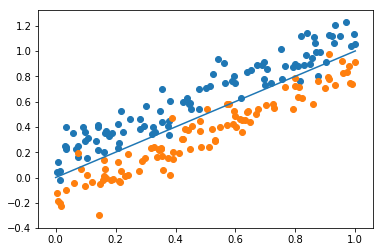

Derivation
Suppose we have a set of $n$ points $x_{1},\ldots,x_{n}$ along with a set of labels $y_{1},\ldots,y_{n}$, where the $y_{i}$ take on the value of 1 or 0, representing one of two classes. These are plotted below, with colors instead.
How can we find a line (or hyperplane in higher dimensions) that divides the data so that, for the most part, orange dots are on one side and blue dots are on the other? We need a function that outputs a very high value on one side of the dividing plane, and a very low value on the other side. There are many candidate functions for this. A simple step function $f(x) = 1$ for $x > 0$, 0 otherwise is one example. Another is the logistic function $$f(x) = \frac{1}{1+e^{-x}}$$ Plot this for yourself to check that it has the desired shape, a very low value on one side that quickly changes to a high value on the other side.
Suppose we have a hyperplane, represented by the vector $\theta$, also known as the parameters. Then the output of the logistic classifier would be $$\hat{y} = \frac{1}{1+e^{-(x\cdot\beta_{0} + \beta_{1})}}$$ The expression inside the exponent looks like the $mx + b$ slope-intercept form of a line, but the $x\cdot\beta_{0}$ part is a vector multiplication instead. If we add a 1 at the beginning of every vector $x$, we can write this as a single vector multiplication. $$\hat{y} = \frac{1}{1+e^{-x\cdot\theta}}$$ We call $\theta$ the parameters of the classifier.
We need some sense of how good the plane is at separating the points, a cost function. We'll use the cross entropy. $$-\left(y_{i}\log\hat{y}_{i} + (1-y_{i})\log(1-\hat{y}_{i})\right)$$ Plot this and check that it is large when the prediction $\hat{y}$ is difference from the actual label $y$. The convention is for $0\log 0$ to equal 0.
We want to pick a plane that makes the total error over all data points as low as possible. In other words we want to find the $\theta$ that minimizes the loss function $J(\theta)$ $$J(\theta) = \sum\limits_{i=0}^{n}-\left(y_{i}\log\hat{y}_{i} + (1-y_{i})\log(1-\hat{y}_{i})\right)$$ In calculus you'd typically take the derivative, set it to 0, and solve. Unfortunately, this doesn't work for logistic regression, and the reason is simply that nobody has been able to think of a way to do it.
However, we can still find the gradient $\nabla J$, which points us in the direction that the total error decreases. If we keep taking steps along this direction, we'll eventually walk to a $\theta$ where the loss function no longer changes, meaning we've minimized it. We want to take small steps, of size $\alpha$, so that we don't end up passing the minimum. $$\theta^{(i)} = \theta^{(i-1)} + \alpha\nabla J(\theta^{i-1})$$ Where $\theta^{(i)}$ is the parameters of at the $i$-th step. This is gradient descent.
Show that the gradient of the loss function is $\nabla J = (y-\hat{y})\cdot X$, where $X$ is a matrix containing each of the data points as a row vector, padded with a column of ones as explained previously.
With this in hand we can write the code that implements gradient descent for logistic regression.
Implementation
Setup
We'll be coding in python. Install conda, then use it to install the following:- numpy
- SciKit Learn
- Jupyter Notebook
Extras
The objective function of logistic regression is convex.
Show that the objective function of logistic regression is convex.